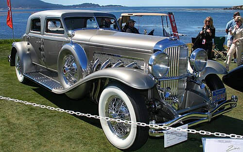

Early History
The journey began in the early 20th century with brands like Rolls-Royce, founded in 1904. Their Silver Ghost set new standards for reliability and elegance. In the 1920s and 1930s, Bentley became famous for its racing success and luxury, while Mercedes-Benz introduced the SSK, known for its power and exclusivity.
Post-War Innovations
After World War II, luxury cars evolved rapidly. The Mercedes-Benz 300SL (1954) stunned the world with its gullwing doors and advanced fuel injection. The Jaguar E-Type (1961) combined breathtaking design with high performance, often called "the most beautiful car ever made." Cadillac Eldorado (1953) became an American icon, representing comfort and style.
Modern Era
In recent decades, brands like BMW, Audi, and Lexus have pushed boundaries with technology and luxury. The BMW 7 Series introduced innovations like iDrive and advanced safety features. The Audi A8 is known for its quattro all-wheel drive and refined interiors. Lexus LS set new benchmarks for reliability and comfort in the luxury segment.
Notable Examples
- Rolls-Royce Phantom: Renowned for its handcrafted interiors and smooth ride, the Phantom is a symbol of ultimate luxury.
- Bentley Continental GT: Combines powerful performance with exquisite craftsmanship, appealing to both drivers and collectors.
- Mercedes-Maybach S-Class: Offers advanced technology, supreme comfort, and exclusivity for discerning customers.
- Ferrari 812 Superfast: Blends luxury with high-performance engineering, representing the pinnacle of Italian automotive design.
Legacy and Future
Today, luxury cars continue to blend tradition with innovation, offering unparalleled driving experiences. Electric and hybrid models, such as the Tesla Model S Plaid and Porsche Taycan, are shaping the future of luxury motoring.
Explore our archives to discover the timeless beauty, engineering marvels, and stories behind the world's most luxurious cars.
Examples of archives
1932 Nash Ambassador 8 Convertible Sedan
The 1932 Nash Ambassador 8 Convertible Sedan marked a significant milestone in American automotive history. Introduced by Nash Motors, the Ambassador 8 featured an advanced straight-eight engine, delivering smooth power and impressive performance for its era. Its elegant convertible sedan bodywork combined luxury with practicality, offering spacious seating and refined details. The 1932 model was notable for its innovative engineering, including a synchromesh transmission and improved ride comfort. Today, the Nash Ambassador 8 is celebrated as a classic example of early 1930s luxury and ingenuity.
1933 Duesenberg SJ Rollston Arlinton Torpedo Sedan
The 1933 Duesenberg SJ Rollston Arlington Torpedo Sedan stands as one of the most iconic and luxurious vehicles of the classic era. Powered by a supercharged straight-eight engine, the SJ model could achieve remarkable speeds for its time, making it a favorite among celebrities and the elite. The custom coachwork by Rollston featured elegant lines, a long hood, and a distinctive torpedo body style, exemplifying the height of 1930s automotive design. With its advanced engineering, opulent interiors, and limited production, the Duesenberg SJ remains a symbol of American luxury and innovation, revered by collectors and enthusiasts worldwide.
1936 Delage D8 120 Chapron Cabriolet
The 1936 Delage D8 120 Chapron Cabriolet is a masterpiece of French automotive artistry and luxury. Built by Delage and bodied by the renowned coachbuilder Henri Chapron, this cabriolet combined advanced engineering with exquisite design. The D8 120 featured a powerful straight-eight engine, delivering smooth and refined performance. Its elegant lines, sweeping fenders, and luxurious interior appointments made it a favorite among Europe’s elite. The collaboration between Delage and Chapron resulted in a vehicle that epitomized pre-war elegance, innovation, and craftsmanship. Today, the D8 120 Chapron Cabriolet is celebrated as a rare and highly collectible classic, admired for its beauty and historical significance.
1940 Packard 180 Darrin Sport Sedan
The 1940 Packard 180 Darrin Sport Sedan is a distinguished example of American luxury and custom coachbuilding from the pre-war era. Designed by the legendary Howard “Dutch” Darrin, this model featured striking European-inspired styling, including a low, sweeping body, distinctive grille, and elegant fender lines. Powered by Packard’s advanced straight-eight engine, the 180 Darrin offered both refined performance and smooth ride quality. Its limited production and bespoke craftsmanship made it a favorite among Hollywood celebrities and the social elite. Today, the Packard 180 Darrin Sport Sedan is highly prized by collectors for its rarity, beauty, and historical significance as a symbol of Packard’s commitment to luxury and innovation.
1969 Cadillac Fleetwood Eldorado coupe
The 1969 Cadillac Fleetwood Eldorado Coupe represents a bold statement in American luxury and design. Featuring a powerful 7.7-liter V8 engine and front-wheel drive—a rarity among luxury coupes of its era—the Eldorado delivered impressive performance and a smooth, commanding ride. Its sharp, angular styling, hidden headlights, and long, sculpted body lines embodied the opulence and innovation of late 1960s Cadillac design. Inside, the Eldorado offered plush seating, advanced features, and a spacious, refined cabin. As a flagship model, the 1969 Eldorado combined cutting-edge engineering with unmistakable presence, making it a standout in Cadillac’s storied history and a sought-after classic among collectors today.
Mercedes-Benz 500K Spezial-Roadster

The Mercedes-Benz 500K Spezial-Roadster, introduced in 1934, is one of the most celebrated pre-war luxury cars. Powered by a supercharged 5.0-liter straight-eight engine, the 500K delivered both impressive performance and effortless cruising. Its Spezial-Roadster variant featured breathtaking coachwork, with sweeping fenders, a long hood, and a low, elegant profile crafted by Mercedes-Benz’s in-house Sindelfingen coachbuilders. The car’s luxurious interior, advanced engineering, and limited production made it a favorite among royalty and celebrities. Today, the 500K Spezial-Roadster is revered as a masterpiece of automotive design and engineering, commanding high esteem and record prices at classic car auctions worldwide.
Rolls-Royce Phantom V James Young Sedanca de Ville
The Rolls-Royce Phantom V James Young Sedanca de Ville is an exceptional example of bespoke British luxury from the 1960s. Built on the prestigious Phantom V chassis, this model was custom-bodied by James Young, one of the most respected coachbuilders of the era. The Sedanca de Ville configuration features a distinctive partially open chauffeur compartment, allowing for both open-air driving and enclosed comfort for rear passengers. Powered by a smooth V8 engine, the Phantom V offered refined performance and a whisper-quiet ride. Its lavish interior, handcrafted woodwork, and attention to detail made it a favorite among royalty, heads of state, and celebrities. Today, the Phantom V James Young Sedanca de Ville stands as a symbol of timeless elegance, exclusivity, and the pinnacle of Rolls-Royce craftsmanship.
Duesenberg

The Duesenberg marque is synonymous with American luxury, innovation, and performance. Founded by brothers Fred and August Duesenberg in 1913, the company quickly gained a reputation for engineering excellence, producing race cars that won the Indianapolis 500 and set speed records. In the late 1920s and 1930s, Duesenberg introduced the legendary Model J, a car that combined advanced technology with opulent design. The Model J and its supercharged SJ variant became status symbols for the wealthy elite, featuring powerful straight-eight engines, custom coachwork, and unmatched attention to detail. Duesenberg cars were favored by celebrities, royalty, and industrialists, and their slogan "It's a Duesy" became part of American culture. Although production ceased in 1937, Duesenberg's legacy endures, with its vehicles celebrated as some of the most prestigious and collectible classics in automotive history.
Italian Isotta-Fraschini 8A-Roadster

The Italian Isotta-Fraschini 8A-Roadster is a legendary Italian luxury automobile produced in the late 1920s and early 1930s. Renowned for its advanced engineering and opulent design, the 8A was powered by a robust straight-eight engine, delivering smooth and powerful performance. Isotta-Fraschini collaborated with some of the most prestigious coachbuilders, resulting in bespoke bodies that showcased Italian artistry and elegance. The 8A Roadster, with its long hood, sweeping fenders, and luxurious interiors, became a favorite among royalty, celebrities, and industrialists worldwide. Today, the Isotta-Fraschini 8A Roadster is celebrated as a rare and highly collectible classic, representing the pinnacle of pre-war Italian automotive luxury and innovation.
Bugatti Type 41 Royale
The Bugatti Type 41 Royale, often simply called the Bugatti Royale, is one of the most legendary and exclusive luxury cars ever built. Produced between 1927 and 1933, only six Royales were made, each featuring a massive 12.7-liter straight-eight engine—one of the largest ever fitted to a passenger car. Designed by Ettore Bugatti for royalty and heads of state, the Royale combined extraordinary engineering with opulent coachwork by renowned designers. Its immense size, elegant lines, and exquisite detailing set new standards for luxury and prestige. Although few were sold during its era due to the Great Depression, the Royale has since become a symbol of automotive excellence and rarity. The car in the image, a Royale Revival, pays homage to this iconic masterpiece, capturing the grandeur and spirit of the original Bugatti Royale for modern enthusiasts and collectors.